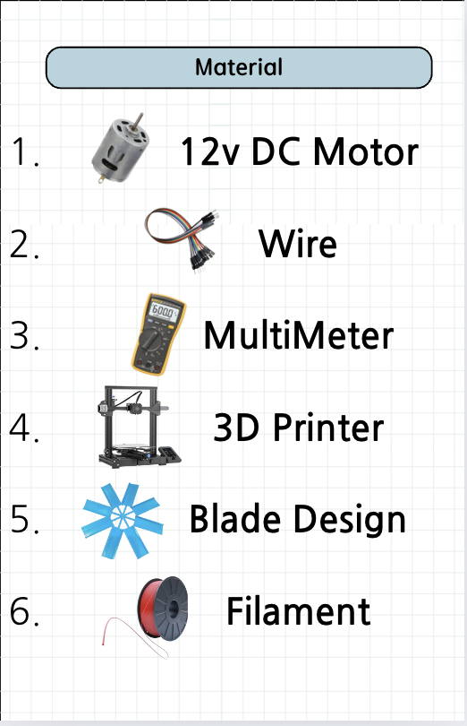
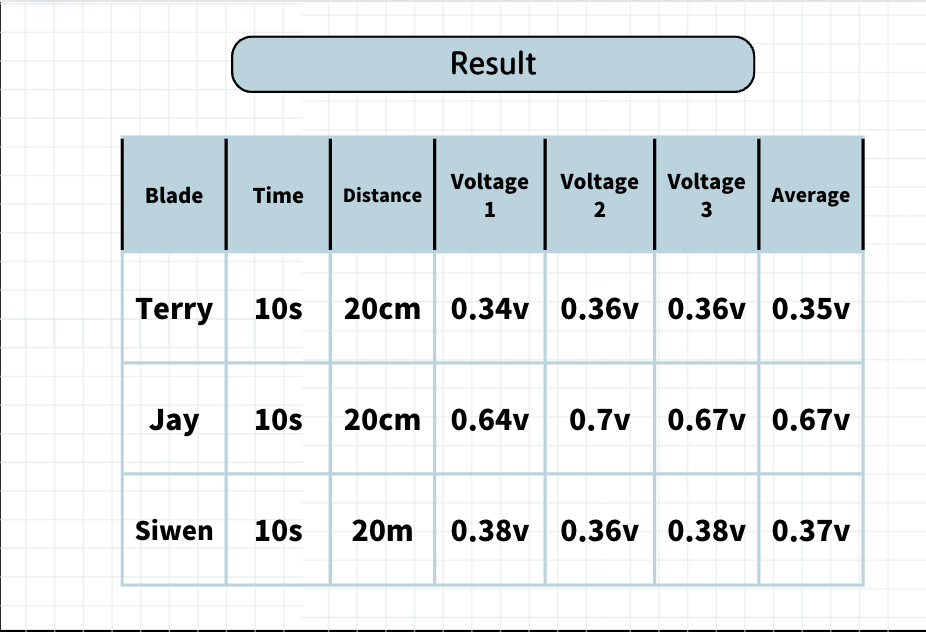

Information
So our team was Jay, Siwen, and Terry. Our team divide their own work and we succeed very well. So our project the effecinity of wind turbine purpose is to compare the different designs of Wind Turbine Blades and compare what kind of option is bad and what kind of option is best. We make 3 different designs. Our group is interested in this project because we can compare which size of turbine produces the most energy.
Material
This is our material that we used to do our project
Result
So this is our chart that shows the time that we record, distance, and Average rate of voltage. Blade Terry is our 1rd model, Blade Siwen is our 2th model, and Blade Jay is our 3th model. From the chart we determined we can know our 3th model has the largest voltage rate, 2th is the second largest voltage rate, and 1rd is the smallest voltage rate. We can conclude that there is no matter about several turbines in wind turbines but there is a difference in the size of each turbine when the size of the turbine is big it catches more wind.